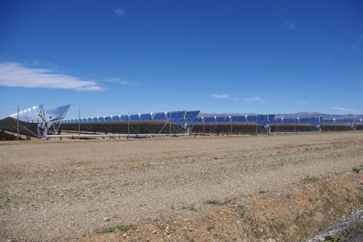

Das Parabolrinnenkraftwerk
Aus der Facharbeit von Mathias Lief.
Um Strom und Wasserstoff ohne den Einsatz von fossilen Brennstoffen zu erzeugen, bietet sich die Sonneneinstrahlung als Energiequelle an. Das Parabolrinnenkraftwerk ist in sonnenreichen Gebieten eine effiziente Möglichkeit diese enormen Energiemengen zur Erzeugung elektrischen Stroms oder für die Elektrolyse von Wasserstoff nutzbar zu machen.
Funktionsweise
Bei dem Parabolrinnenkraftwerk handelt es sich um ein konzentrierendes Solarkraftwerk. Das heißt es verwendet parabelförmige Spiegel, um die Sonnenstrahlen auf einem länglichem Absorberrohr zu konzentrieren. Dieses Rohr ist mit einer Flüssigkeit (dem Wärmeträgermedium) gefüllt, die die Energie der Strahlen in Form von Wärme aufnimmt. Diese Wärme wird dann weitertransportiert, um sie zur Erzeugung elektrischen Stroms zu nutzen. Damit das Kraftwerk auch nachts weiterhin Strom erzeugen kann, wird ein Wärmespeicher benötigt. Dieser speichert bei starker Sonneneinstrahlung und geringerem Strombedarf einen Teil der in dem Trägermedium enthaltenen Wärme, um sie bei Bedarf wieder für die Stromproduktion abzugeben.

Die aufgenommene Wärme wird mithilfe von Wärmetauschern (Vorwärmer, Verdampfer, Überhitzer und Zwischenüberhitzer) an einen zweiten Wasserdampfkreislauf übertragen. Der dabei entstehende Dampf treibt dann eine Turbine an, die mithilfe eines Generators Strom erzeugt. Um möglichst viel Wärme aufnehmen zu können, wird der Dampf soweit gekühlt, bis er wieder flüssig ist.
Energieausbeute
Die Höhe der Energieausbeute ist vom Gesamtwirkungsgrad der Anlage abhängig. Energieverluste treten bei der Konzentration auf dem Absorber, bei dem Wärmetransport und bei der Umwandlung in Strom auf. Der Wirkungsgrad für die Erzeugung von Strom eines effizienten Kraftwerks beträgt so etwa 50%, bei der Energiespeicherung in Wasserstoff gehen etwa 10% des Gesamtwirkungsgrads gegenüber dem des Stroms verloren. In einer fiktiven - aber realistischen - Anlage auf einer Fläche von 600 000 m² (das entspricht etwa einem Quadrat mit der Seitenlänge von 775 m) werden etwa 160 000 m² als Spiegelfläche genutzt. Ausgehend von einer jährlichen durchschnittlichen Bestrahlungsleistung der Sonne (inkl. Nächte) von 500 W/m² ergibt sich die elektrische Leistung.
\[P_{elektr} = {160\ 000 \ m^2 \cdot 500 \ \frac {W}{m^2} \ \cdot 0,5 }\] \[ = 4 \cdot 10^7 \ W\](40 000 000 Watt)
Über den Zeitraum eines Jahres (\(3,1 \cdot 10^7s\)) ergibt sich die Energieausbeute.
\(E_{elektr} = 4 \cdot 10^7 \ W\cdot 3,1 \cdot 10^7 \ s\) \[= 1,3 \cdot 10^{15} \ J \]\[=360 \cdot 10^6 \ kWh \](360 000 000 kWh)
Ebenfalls kann man, wenn man einen jährlichen Energiebedarf von 3 500 kWh zugrunde legt, auf dieser Fläche etwa 100 000 Haushalte mit elektrischem Strom versorgen.